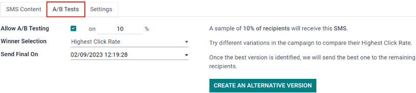
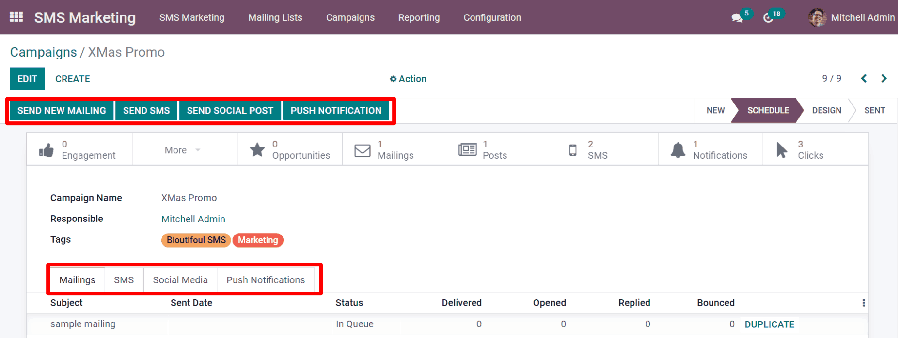
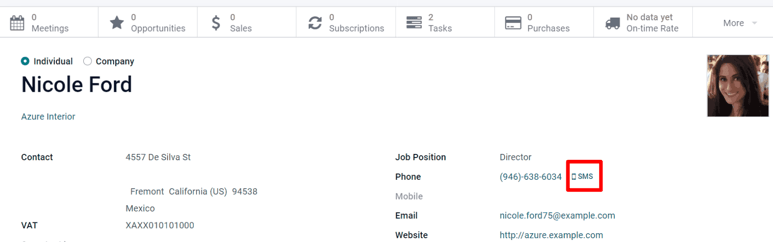
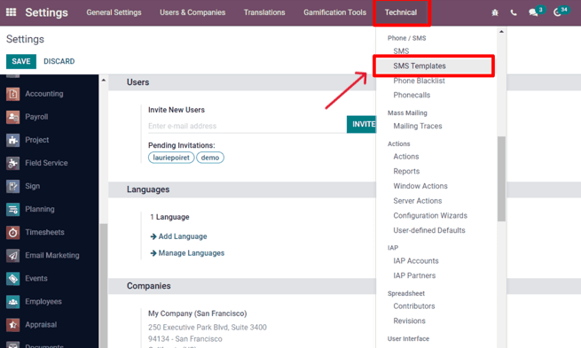
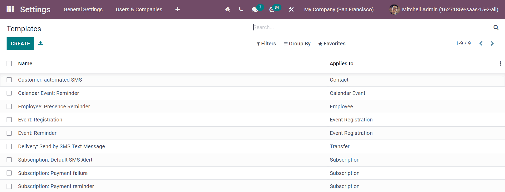

SMS campaign settings¶
Utilizing SMS campaigns with Odoo SMS Marketing isn’t just an effective advertisement strategy, it’s also a great way to remind people about upcoming events, issued invoices, and so much more.
But, before SMS campaigns can be created (and sent), a few specific settings and features must be enabled first.
SMS campaign setting¶
To enable SMS campaigns in Odoo, make sure the Mailing Campaigns feature is activated by going to , and then enable Mailing Campaigns and Save the changes.
Note
Activating the Mailing Campaigns feature in the General Settings also enables the A/B Test feature.
Once the setting is enabled, navigate back to the app, and notice the Campaigns header menu is now available for use. Similarly, the A/B Test tab is now also available on every SMS template form.
A/B tests¶
A/B Tests allows any SMS mailings to be tested against other versions within the same campaign, in order to compare which version is the most successful in producing engagement and/or conversion outcomes.
On an SMS template form, under the A/B Tests tab, initially, there’s only a single checkbox labeled: Allow A/B Testing.
When clicked, a series of other options appear.
In the first field, enter a desired percentage of recipients to conduct the A/B Test on.
Beneath the percentage field is the Winner Selection field. This is what Odoo will use to determine the successful result of an A/B Test. In other words, this tells Odoo how to pick a winning A/B test.
The following sections are available: Manual, Highest Click Rate, Leads, Quotations, or Revenues.
Finally, the Send Final On field is listed. This represents the date-time that Odoo uses as a deadline to determine the winning mailing variation. Then, Odoo sends that winning mailing variation to the remaining recipients, who weren’t involved in the test, at that prior date and time.
Tip
Quickly create different versions of the mailing to add to the A/B Test by clicking the Create an Alternate Version button.
Note
Remember, the winning mailing variation is based on the criteria selected in the Winner Selection field.
Campaigns page¶
To create, edit, or analyze any campaign, click in the header menu of the SMS Marketing app. On the Campaigns page, each campaign displays various information related to the mailings associated with that campaign (e.g. number of emails, social posts, SMSs, and push notifications).

Campaign templates¶
Click Create to create a new campaign, and Odoo reveals a blank campaign template form to fill out. Alternatively, select any previously-made campaign in order to duplicate, review, or edit its campaign template form.
With each campaign, the options to Send New Mailing, Send SMS, Send Social Post, and Push Notifications are available above the template form.
Whenever one of those communication options is added to the campaign, Odoo will create a new corresponding tab on the template form, where those types of messages can be reviewed or edited, along with various data sets related to each specific mailing.
At the top of the template, there are various analytical smart buttons. When clicked, Odoo reveals in-depth metrics related to that specific topic (e.g. Engagement, Opportunities, etc.) on a separate page.
Beneath the smart buttons, are fields for Campaign Name and Responsible. Odoo also allows for various Tags to be added, as well (if necessary).
Sending SMSs through the Contacts app¶
Sending SMS mailings directly through a contact’s form is available by default.
In order to send an SMS in this fashion, navigate to the app, select the desired contact in the database, and click on the SMS icon on the contact form (next to the Phone Number field).
To send a message to multiple contacts at once, navigate to the main app main dashboard, choose the List View, and select all the desired contacts to whom the message should be sent. Then, under Action, select Send SMS.

Set up SMS templates for future use¶
In order to set up SMS Templates for future use, activate developer mode, by navigating to the main Odoo dashboard that is full of apps, and select the . Then, scroll down to the Developer Tools section, and click Activate the Developer Mode.
Once developer mode is activated, the main Odoo dashboard appears once more, with a now-visible bug icon, which is located at the top-right corner of the dashboard; this bug icon indicates that developer mode is currently active.
Next return to the and, in the now-visible header menus at the top, choose to begin setting up SMS templates for future marketing campaigns.
Inside of the SMS Templates dashboard, Odoo reveals an entire page of SMS templates. The default List view showcases each template’s name, and to which recipients it applies.
On this page, SMS templates can be edited or created from scratch.
